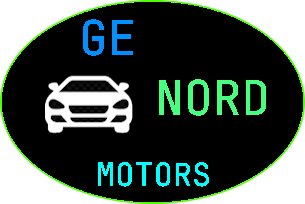

Partner: Genord Motors
Genord Motors has long been an inspiration for us at Bonkers Inc. They paved the way forward in the usage of rats, as opposed to chinese children, for cheap labour, leaving the chinese children to have a real childhood rather than slaving away in a factory. Genord has inspired us to use rats from the same trusted supplier, the rat supplier, to create real content for the internet, if you want to help us afford all the rats we will need you can donate to the cause here and help to make the internet real again

Partner: The Onion
We have chosen to partner with america's finest news source, they will recieve 20% of all our donations in exchange for writing our news articles, we chose The Onion to partner with as they have a history of predicting news events ahead of time and we believe this ability will be helpful in predicting our death ahead of time so we can cash out our stocks early